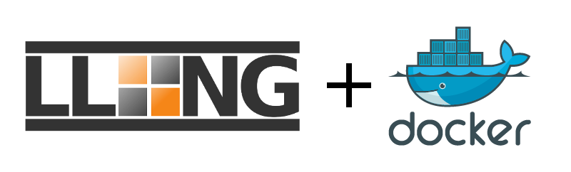

Docker allows do run application into containers.
You can find a Docker image for LemonLDAP::NG in this repository: https://hub.docker.com/r/coudot/lemonldap-ng/
See also this github project: https://github.com/LemonLDAPNG/lemonldap-ng-docker
Prerequisites:
echo "127.0.0.1 auth.example.com manager.example.com test1.example.com test2.example.com" | sudo tee -a /etc/hosts
docker run -d --add-host reload.example.com:127.0.0.1 -p 80:80 coudot/lemonldap-ng
Then connect to http://auth.example.com with your browser and log in with dwho/dwho.